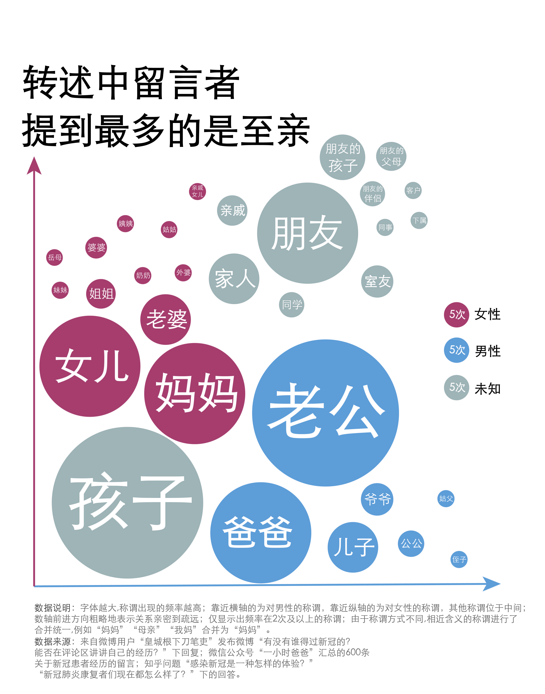
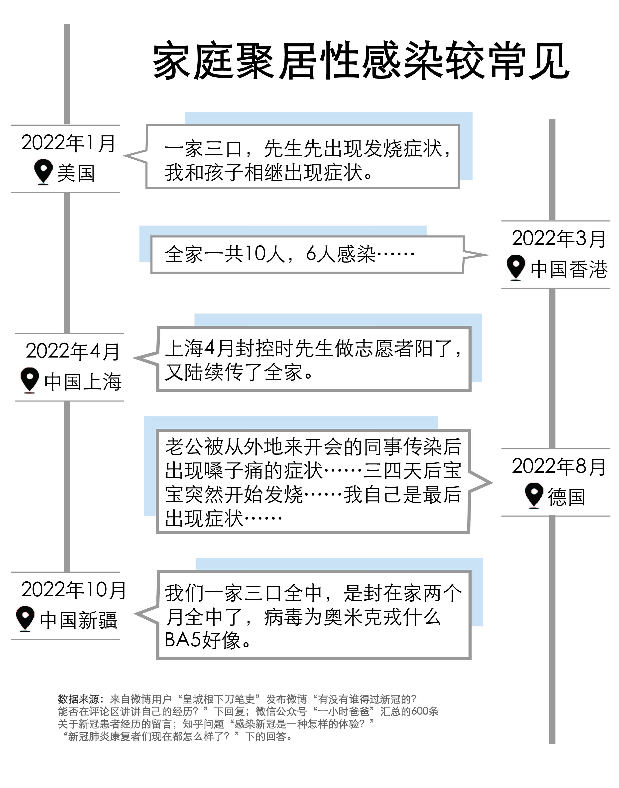
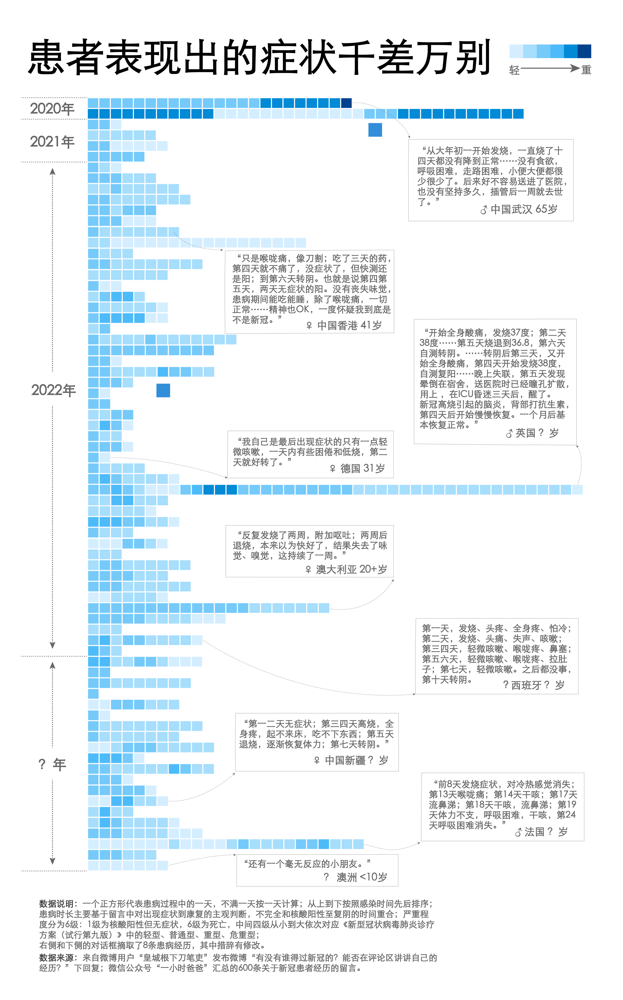
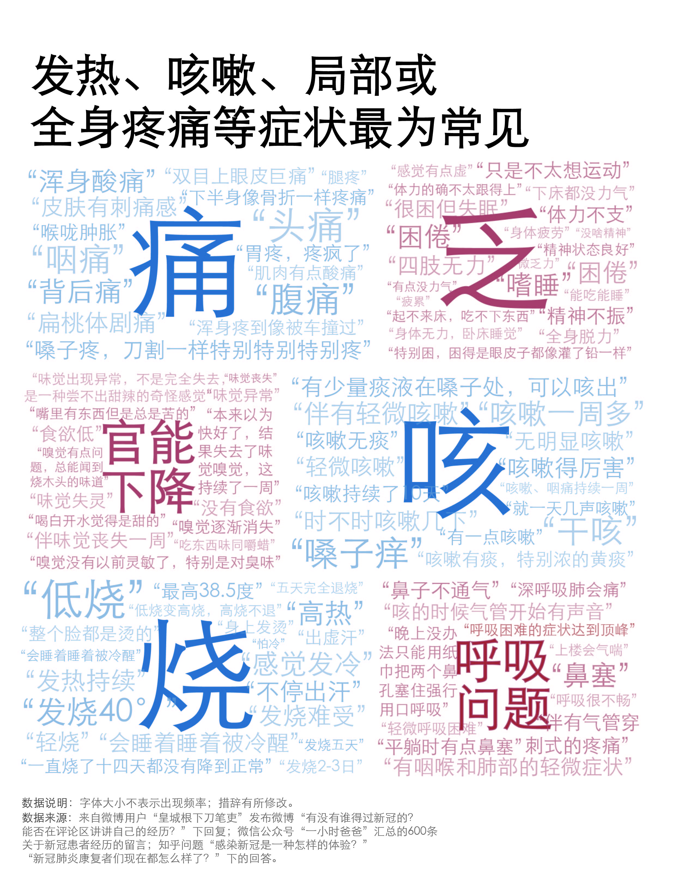
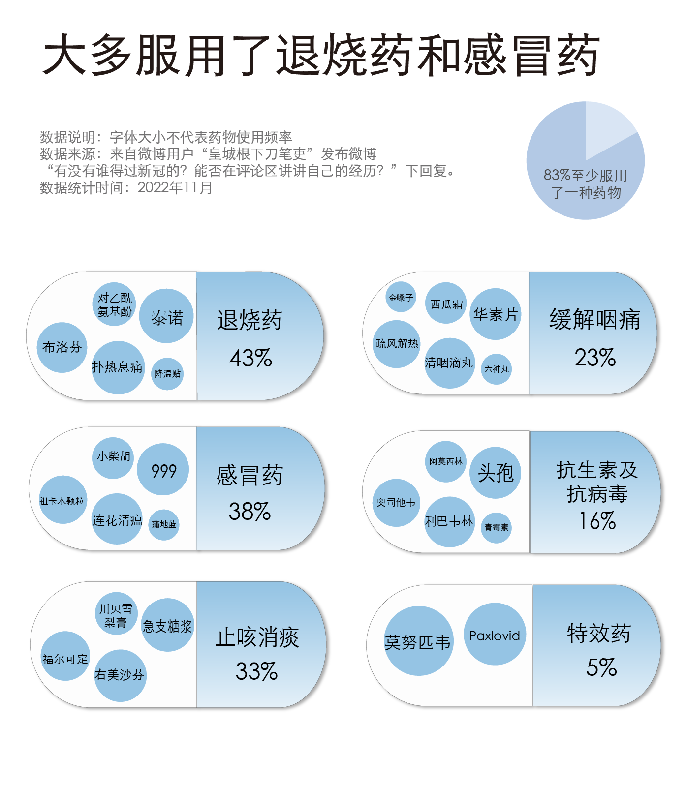
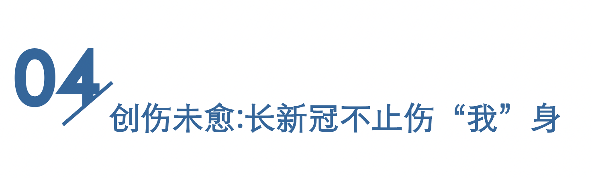
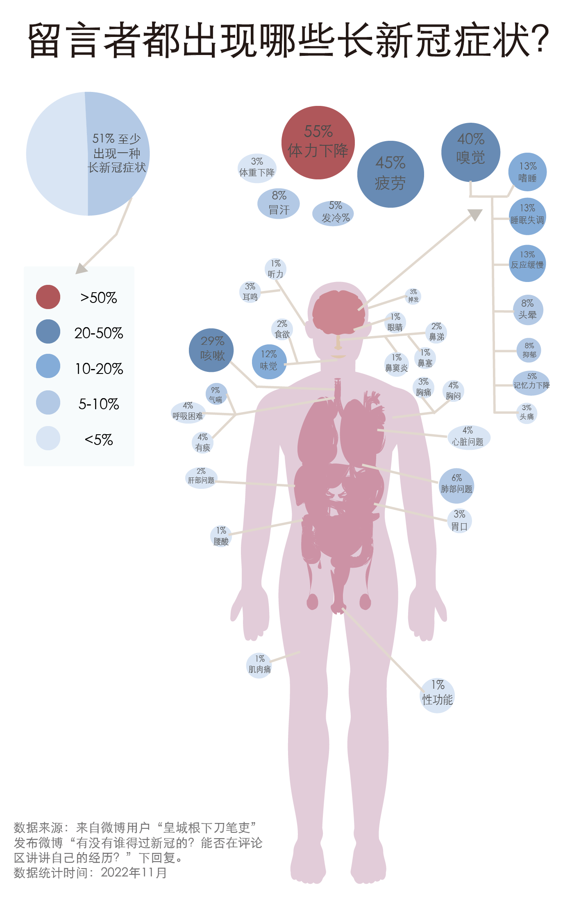
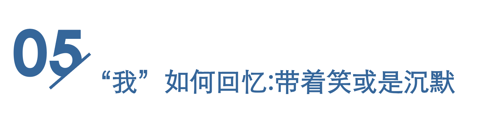

除了“我阳了”，还有很多我想告诉你｜565段新冠患病经历
2022-12-19 08:01
2022年11月以来，新一轮疫情反弹来势汹汹。根据国家和省市卫健委统计，包括无症状感染者在内，新增本土病例由11月1日的2755例涨至25日的34909例——短短二十多天，翻了近13倍。
膨胀的数字背后是蔓延的紧张与焦虑。互联网上相关的讨论铺天盖地，重者视病毒为洪水猛兽，一旦感染便是灭顶之灾；轻者则认为无非是“大号流感”，不足为惧。随着 二十条与新十条的颁布，多个省市防疫政策陆续放开，清零政策逐渐画上句点，我们猝不及防地站在了直面新冠病毒的路口。人们迫切地希望获取更多关于病毒和防疫的信息，以面对未知带来的不确定性。
在各种庞杂的信息中，新冠患者的亲历讲述具有独特的说服力。自疫情爆发以来，全球新冠确诊病例超6亿例，我国本土超9000万例。这些人中，有的经历感染，治疗，康复后，又回归生活，隐入人海；有的从此停驻生命，如灯灭般，万籁俱寂。
这些病痛的亲历者或见证者，通过社交媒体发出了自己的声音。微博用户“皇城根下刀笔吏”于11月12日发布微博“有没有谁得过新冠的？能否在评论区讲讲自己的经历？”，几日内便收获了将近两万条评论；微信公众号“一小时爸爸”在16日汇总了600条关于新冠患者经历的留言……叙述者把一段段患病经历中无数所见所感揉碎重组，拼凑出短则数行，长则数千字的留言。
从“皇城根下刀笔吏”的微博评论、“一小时爸爸”汇编的留言、“感染新冠是一种怎样的体验？”与“新冠肺炎康复者们现在都怎么样了？”两个知乎问题下的回答中，我们随机选取了384条留言，希望能借此拼凑出一幅全面多元的群像图，来复现那些无法被统计数字所代替的、鲜活的故事与生命，也希望以真实的信息，抚平未知的焦虑。
384条留言，道出了565段患病经历。叙述者不仅在自述亲身经历，也作为见证者或倾听者，转述身边人的故事。
在提供确诊时间、地点的469条经历中，36.5%的感染发生在国内，集中于上海、新疆、台湾等此前发生过大规模疫情爆发或封控的地区；其余的感染发生在境外，感染地点遍及亚非欧澳北南美六个大洲；感染时间覆盖了2020年（9%）、2021年（9%）和2022年（82%）这三年。患者中，最小的只有两个月大，最年长的已年过耄耋。
我们在532条患病故事中识别出了感染者与留言者关系，发现其中有245段自述和287段转述。

从留言中提及的称谓看，除了自己，叙述人最关注的是至亲——“孩子”“爸爸”“妈妈”“老公”“女儿”的数量远大于其他称谓。这也和感染的具体场景有关。71条留言明确提及，感染发生在家庭中，往往一人感染后，同居的亲属也开始陆续确诊。

看见叙述，也要看见那些“不被叙述”。新冠死者和部分重症患者无法为自己发声，只能被转述，而当这些经历未被他人充分转述时，死者和重症患者的声音就在赛博空间中“淹没”了。
在565段真实经历中，有25位患者为临床分型中的重症、危重症患者和死者[ 结合《新型冠状病毒肺炎诊疗方案（试行第九版）》中的临床分型与留言中对患者症状的描述而得 ]。这25段患病故事，只有6位为感染者自述，其余皆经过留言者转述。不幸者无法发声或不愿发声，使得新冠感染经历分享的舆论场成为了幸存者的主场，这可能会使我们从网络端接收的相关信息与真实情况存在一定的偏差。
“核酸阳了，这大哥当时是非常不相信，因为他的症状和网上说的不一样，（他）不拉肚子，味觉也没消失……”有留言记录下这样一段见闻
实际上，感染病毒毒株的性质、个人身体素质和医疗条件的差异都可能使新冠患者表现出的症状千差万别。我们将每条清晰记录了从感染至康复/死亡的全过程的留言绘制成一条彩带，所有74段经历构成了如下波澜起伏的画面。

所有彩带色度与长度的千变万化，反映出了新冠症状个体间差异之大、个体内变化之多，似乎难用一套通用的公式总结。有患者就回忆说：“每天和每天不一样，像拆盲盒一样”。
差异并不意味着病状全然不可预测。我们统计了所有留言对症状的描述，发现发热、干咳、乏力、局部或浑身酸痛是最常见的临床表现。

然而，针对各类症状17%的留言者谈到，自己或身边人未服用任何药物，仅靠自行痊愈。
服用药物的患者依然占了大多数。其中，85名留言者提到了莲花清瘟胶囊或冲剂。尽管曾引发争议，这味中药已被国家卫健委作为推荐用药写入新冠肺炎诊疗方案中。患病期间，多症状的并发可能需要多种药物的治疗，有留言半是无奈半是幽默地写道：“川贝雪梨膏用于喉咙痛，布洛芬用于治疗头疼，右美沙芬用于止咳，还有通鼻子的药物。”
除了这些常规药物，留言者还提到了其他的“偏方”：多喝热水、补充维生素（可提高免疫力），甚至还有针灸、拔罐和刮痧。

据疾控中心的研究，老年、先前有心血管疾病以及糖尿病等基础疾病的新冠肺炎患者更容易发展成重症或者危重症。对于这些基础疾群体而言，感染新冠肺炎无疑是雪上加霜。

在“皇城根下刀笔吏”的微博评论区，有留言者希望能获悉基础病人群感染新冠后的情况。这样的诉求引发了大量的共鸣，在这条热门评论里，人们纷纷留下了对自己或身边的基础病人的担忧。

关切之音很快有了回响。有基础病人站出来现身说法，安慰说新冠并没有对自己身体产生严重的伤害；也有许多人敲响警钟，一定要做好防护，因为身边的基础病人确实受到了病毒更加严酷的折磨……整体而言，在我们识别出的40段基础病人的经历中，有15位患者发展成重症甚至死亡。而北京市呼吸疾病研究所所长童朝晖指出，目前我国90%以上的患者都属于无症状和轻型患者。相比之下，基础病群体的重症率确实要远高于普通人群。


长新冠，即新冠后遗症。根据世卫组织的定义，长新冠指感染新冠病毒的3个月后还有症状，这些症状最少持续2个月，且不能用其他疾病来解释。
在谈及后遗症的273段患病经历中，近一半患者明确表示自己没有长新冠；33名叙述者发现，自己或身边人比感染前更易感到疲劳；40名叙述者谈到味觉或嗅觉失灵，“尝什么都没味道”。
后遗症是可以逐渐好转的。许多留言在提到咳嗽、嗅觉或味觉减弱等后遗症时，都带有时间限制，例如有留言写道，“嗅觉有点问题，总能闻到烧木头的味道,一个月以后消失”，或是“恢复后，还是会咳嗽，但是将近一个月后就没有了”。许多提及后遗症好转的患者经历长新冠的周期短至两周，长则一到两月。

身体的伤痕尚能治愈，心灵的创伤和人生轨迹的改变则难以逆转。
新冠染病经历直接影响了部分留言者的工作和收入。有叙述人谈到，自己在患病后被老板婉言辞退，只能另谋他处；也有自由职业者因为长期反复隔离，在半年内没有收入来源。
心态和生活习惯也因为患病经历而改变。“一有风吹草动就喜欢买很多东西备在家里，”有留言无奈地写道。
复阳的可能性，让患者饱受困扰。一名叙述者说，自己康复之后依旧有防疫工作人员“一而再，再而三的上门血检及核酸检测，也未事先电话通知。” 然而，根据今年7月钟南山等人在《国家科学评论》(National Science Review)上发表的一项研究，新冠感染者复阳之后不太可能具有传染性，对社区是安全的。
病痛难愈，心病更甚。许多新冠患者在叙述中提到了自己久久难以平抚的心灵创伤。新冠患者本就是疫情中的受害者，现实却让他们中的一些人遭遇了二次伤害。好不容易翻过病毒这座山头，山那边却还是山，对于一些感染过新冠的患者来说，想要回到之前的平静生活并非易事。


感染新冠在患者和见证者的心中留下或深或浅的情感烙印，他们将这些情绪揉碎，和回忆一起，书写进文字里。
负面情绪依然是回忆的主旋律：新冠让患者的生活链条突然断开，在焦虑、害怕、痛苦、紧张中惶惶不可终日。更有甚者因此“自责”：“感觉给别人带来麻烦，十分自责”；“向父母和长辈道歉，因为我隐瞒我得了新冠”……

然而，虽是病毒的受害者，许多叙述者仍在为他人考虑：或是安抚大家“不必过于担心”“新冠不可怕，可怕的是未知的恐惧心理”；或是警醒他人，“能不得还是不得”“无论身在何地，面对何种病毒，无论康复后是否有后遗症，自身才是健康第一责任人，做好个人防护。”
正因如此，尽管记叙的是与病毒的抗争过程，留言字里行间却不乏希望。“衷心祝愿所有人都健康平安”，有留言写道。
这位叙述人留下这句话时，正处于感染的第四天，刚退烧不久，精神正在恢复。“头晕，继续喉咙痛”，但他说，“问题不大。衷心祝愿所有人都健康平安。”